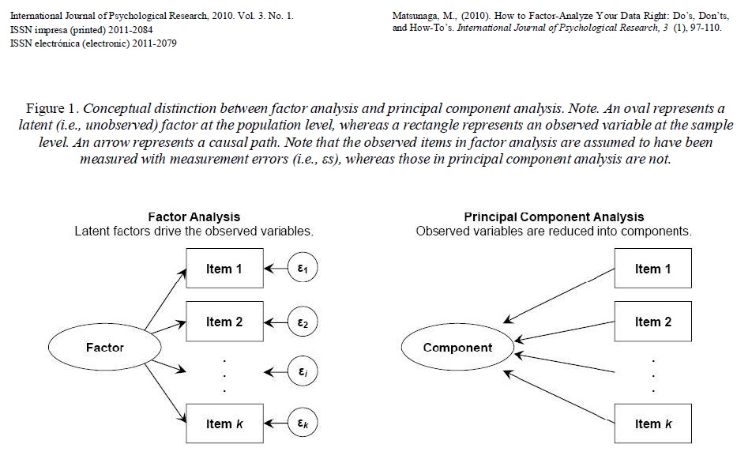
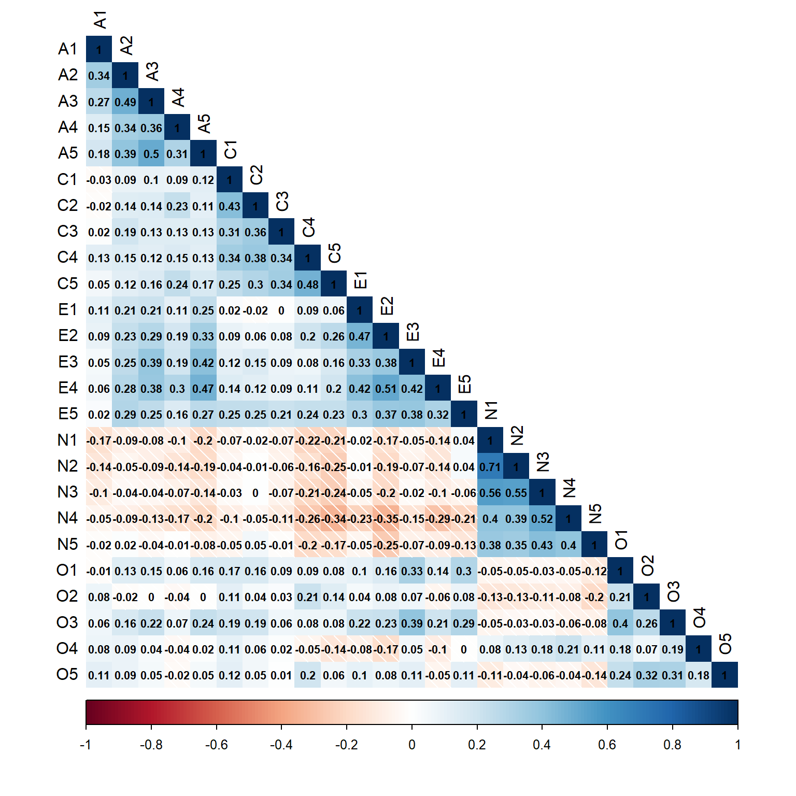
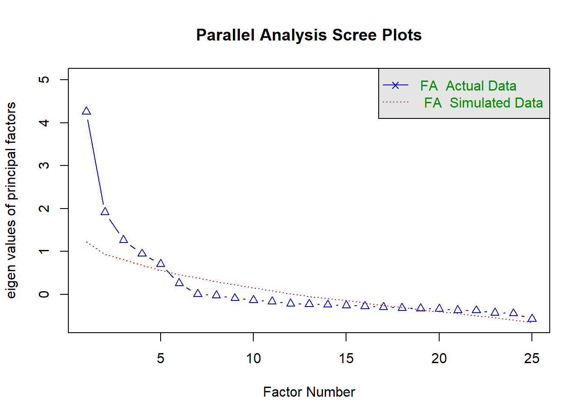
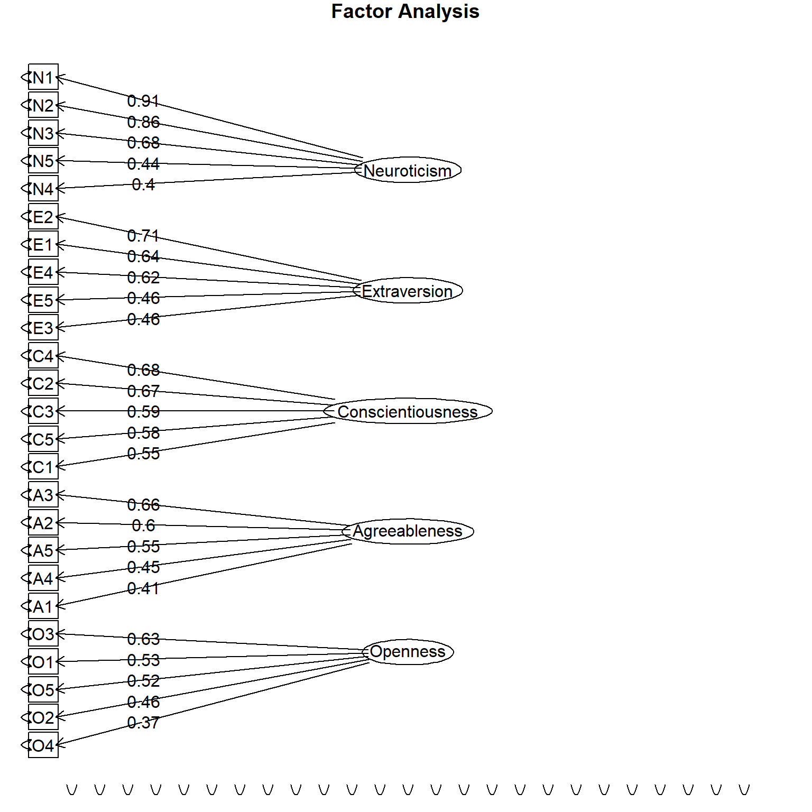

# Load required libraries
library(psych)
library(corrplot)
library(tidyverse)Example of Exploratory Factor Analysis with R
Introduction to Exploratory Factor Analysis (EFA)
Exploratory Factor Analysis (EFA) is a statistical technique used to identify underlying factors that explain the observed correlations among a set of variables. It is commonly employed in psychology, sociology, and other social sciences to uncover the latent structure of a set of observed variables.
Basic Elements of EFA
Latent Factors and Observed Variables
In EFA, the goal is to identify latent factors that influence the observed variables. The relationship between latent factors (F) and observed variables (X) can be represented by the following equation:
\(\mathbf{X}_{i} = \mathbf{\Lambda} \mathbf{F}_{i} + \mathbf{\epsilon}_{i}\)
where: \(\mathbf{X}\) is the vector of observed variables; \(\mathbf{\Lambda}\) is the matrix of factor loadings; \(\mathbf{F}\) is the matrix of latent factors; \(\mathbf{\epsilon}\) is the matrix of unique factors (error or residual terms).
Notice that the subscript \(_i\) indicates casewise scores (i.e., that term may take different values for each observation in the dataset).
If we want to model the covariance between observed variables \(x\) (i.e., \(\mathbf{\Sigma}\)), then the equation is:
\(\mathbf{\Sigma} = \mathbf{\Lambda} \mathbf{\Phi} \mathbf{\Lambda}^{'} + \mathbf{\Psi}^{2}\)
where \(\mathbf{\Phi}\) represents the variance-covariance matrix of the latent factors, and \(\mathbf{\Psi}^{2}\) is the residual covariance matrix.
Notice that for Principal Component Analysis, the equation is \(\mathbf{\Sigma} = \mathbf{\Lambda} \mathbf{\Phi} \mathbf{\Lambda}^{'}\).
Hence,
EFA models the shared variance among a set of observed variables,
PCA models the total variance among a set of observed variables.
Indeed, with PCA explains 100% of the variance (see below references to Cumulative Var) and as a result the lambdas are much higher than those found in EFA.
In conclusion, use PCA only if the aim is data reduction, and thus you believe that no uniqueness variance is necessary (e.g., different socio-economic indicators).

Factor Loadings
Factor loadings (\(\lambda\)) represent the strength and direction of the relationship between latent factors and observed variables. They are represented through the arrows pointing from the latent factor to the observed variable. The greater the factor loading, the more influence the latent factor has on the observed variable.
A standardized factor loading can be interpreted as a correlation coefficient between the latent variable and the observed variable.
Application of EFA to a Big Five open dataset
Preliminary setings and analysis
Before conducting EFA, it’s essential to examine the correlation matrix of the observed variables. This matrix provides insights into the strength and direction of the relationships among variables.
In what follows, we will use the bfi dataset included in the psych package.
First of all, load libraries, glimpse dataset, reverse items, and describe observed variables
# Load the bfi dataset
data(bfi)
# Glimpse dataset
glimpse(bfi)Rows: 2,800
Columns: 28
$ A1 <int> 2, 2, 5, 4, 2, 6, 2, 4, 4, 2, 4, 2, 5, 5, 4, 4, 4, 5, 4, 4, …
$ A2 <int> 4, 4, 4, 4, 3, 6, 5, 3, 3, 5, 4, 5, 5, 5, 5, 3, 6, 5, 4, 4, …
$ A3 <int> 3, 5, 5, 6, 3, 5, 5, 1, 6, 6, 5, 5, 5, 5, 2, 6, 6, 5, 5, 6, …
$ A4 <int> 4, 2, 4, 5, 4, 6, 3, 5, 3, 6, 6, 5, 6, 6, 2, 6, 2, 4, 4, 5, …
$ A5 <int> 4, 5, 4, 5, 5, 5, 5, 1, 3, 5, 5, 5, 4, 6, 1, 3, 5, 5, 3, 5, …
$ C1 <int> 2, 5, 4, 4, 4, 6, 5, 3, 6, 6, 4, 5, 5, 4, 5, 5, 4, 5, 5, 1, …
$ C2 <int> 3, 4, 5, 4, 4, 6, 4, 2, 6, 5, 3, 4, 4, 4, 5, 5, 4, 5, 4, 1, …
$ C3 <int> 3, 4, 4, 3, 5, 6, 4, 4, 3, 6, 5, 5, 3, 4, 5, 5, 4, 5, 5, 1, …
$ C4 <int> 4, 3, 2, 5, 3, 1, 2, 2, 4, 2, 3, 4, 2, 2, 2, 3, 4, 4, 4, 5, …
$ C5 <int> 4, 4, 5, 5, 2, 3, 3, 4, 5, 1, 2, 5, 2, 1, 2, 5, 4, 3, 6, 6, …
$ E1 <int> 3, 1, 2, 5, 2, 2, 4, 3, 5, 2, 1, 3, 3, 2, 3, 1, 1, 2, 1, 1, …
$ E2 <int> 3, 1, 4, 3, 2, 1, 3, 6, 3, 2, 3, 3, 3, 2, 4, 1, 2, 2, 2, 1, …
$ E3 <int> 3, 6, 4, 4, 5, 6, 4, 4, NA, 4, 2, 4, 3, 4, 3, 6, 5, 4, 4, 4,…
$ E4 <int> 4, 4, 4, 4, 4, 5, 5, 2, 4, 5, 5, 5, 2, 6, 6, 6, 5, 6, 5, 5, …
$ E5 <int> 4, 3, 5, 4, 5, 6, 5, 1, 3, 5, 4, 4, 4, 5, 5, 4, 5, 6, 5, 6, …
$ N1 <int> 3, 3, 4, 2, 2, 3, 1, 6, 5, 5, 3, 4, 1, 1, 2, 4, 4, 6, 5, 5, …
$ N2 <int> 4, 3, 5, 5, 3, 5, 2, 3, 5, 5, 3, 5, 2, 1, 4, 5, 4, 5, 6, 5, …
$ N3 <int> 2, 3, 4, 2, 4, 2, 2, 2, 2, 5, 4, 3, 2, 1, 2, 4, 4, 5, 5, 5, …
$ N4 <int> 2, 5, 2, 4, 4, 2, 1, 6, 3, 2, 2, 2, 2, 2, 2, 5, 4, 4, 5, 1, …
$ N5 <int> 3, 5, 3, 1, 3, 3, 1, 4, 3, 4, 3, NA, 2, 1, 3, 5, 5, 4, 2, 1,…
$ O1 <int> 3, 4, 4, 3, 3, 4, 5, 3, 6, 5, 5, 4, 4, 5, 5, 6, 5, 5, 4, 4, …
$ O2 <int> 6, 2, 2, 3, 3, 3, 2, 2, 6, 1, 3, 6, 2, 3, 2, 6, 1, 1, 2, 1, …
$ O3 <int> 3, 4, 5, 4, 4, 5, 5, 4, 6, 5, 5, 4, 4, 4, 5, 6, 5, 4, 2, 5, …
$ O4 <int> 4, 3, 5, 3, 3, 6, 6, 5, 6, 5, 6, 5, 5, 4, 5, 3, 6, 5, 4, 3, …
$ O5 <int> 3, 3, 2, 5, 3, 1, 1, 3, 1, 2, 3, 4, 2, 4, 5, 2, 3, 4, 2, 2, …
$ gender <int> 1, 2, 2, 2, 1, 2, 1, 1, 1, 2, 1, 1, 2, 1, 1, 1, 2, 1, 2, 2, …
$ education <int> NA, NA, NA, NA, NA, 3, NA, 2, 1, NA, 1, NA, NA, NA, 1, NA, N…
$ age <int> 16, 18, 17, 17, 17, 21, 18, 19, 19, 17, 21, 16, 16, 16, 17, …# Reverse item (see the bfi documentation to understand which are the items to be reversed)
my_bfi <- bfi %>%
select(A1:O5) %>%
mutate(A1 = 7 - A1,
C4 = 7 - C4,
C5 = 7 - C5,
E1 = 7 - E1,
E2 = 7 - E2,
O2 = 7 - O2,
O5 = 7 - O5)
# Descriptive statistics
my_bfi %>%
psych::describe(.) %>%
as.data.frame() %>%
select(-vars, -trimmed, -range, -mad) %>%
round(., 2) %>%
knitr::kable(.)| n | mean | sd | median | min | max | skew | kurtosis | se | |
|---|---|---|---|---|---|---|---|---|---|
| A1 | 2784 | 4.59 | 1.41 | 5 | 1 | 6 | -0.83 | -0.31 | 0.03 |
| A2 | 2773 | 4.80 | 1.17 | 5 | 1 | 6 | -1.12 | 1.05 | 0.02 |
| A3 | 2774 | 4.60 | 1.30 | 5 | 1 | 6 | -1.00 | 0.44 | 0.02 |
| A4 | 2781 | 4.70 | 1.48 | 5 | 1 | 6 | -1.03 | 0.04 | 0.03 |
| A5 | 2784 | 4.56 | 1.26 | 5 | 1 | 6 | -0.85 | 0.16 | 0.02 |
| C1 | 2779 | 4.50 | 1.24 | 5 | 1 | 6 | -0.85 | 0.30 | 0.02 |
| C2 | 2776 | 4.37 | 1.32 | 5 | 1 | 6 | -0.74 | -0.14 | 0.03 |
| C3 | 2780 | 4.30 | 1.29 | 5 | 1 | 6 | -0.69 | -0.13 | 0.02 |
| C4 | 2774 | 4.45 | 1.38 | 5 | 1 | 6 | -0.60 | -0.62 | 0.03 |
| C5 | 2784 | 3.70 | 1.63 | 4 | 1 | 6 | -0.07 | -1.22 | 0.03 |
| E1 | 2777 | 4.03 | 1.63 | 4 | 1 | 6 | -0.37 | -1.09 | 0.03 |
| E2 | 2784 | 3.86 | 1.61 | 4 | 1 | 6 | -0.22 | -1.15 | 0.03 |
| E3 | 2775 | 4.00 | 1.35 | 4 | 1 | 6 | -0.47 | -0.47 | 0.03 |
| E4 | 2791 | 4.42 | 1.46 | 5 | 1 | 6 | -0.82 | -0.30 | 0.03 |
| E5 | 2779 | 4.42 | 1.33 | 5 | 1 | 6 | -0.78 | -0.09 | 0.03 |
| N1 | 2778 | 2.93 | 1.57 | 3 | 1 | 6 | 0.37 | -1.01 | 0.03 |
| N2 | 2779 | 3.51 | 1.53 | 4 | 1 | 6 | -0.08 | -1.05 | 0.03 |
| N3 | 2789 | 3.22 | 1.60 | 3 | 1 | 6 | 0.15 | -1.18 | 0.03 |
| N4 | 2764 | 3.19 | 1.57 | 3 | 1 | 6 | 0.20 | -1.09 | 0.03 |
| N5 | 2771 | 2.97 | 1.62 | 3 | 1 | 6 | 0.37 | -1.06 | 0.03 |
| O1 | 2778 | 4.82 | 1.13 | 5 | 1 | 6 | -0.90 | 0.43 | 0.02 |
| O2 | 2800 | 4.29 | 1.57 | 5 | 1 | 6 | -0.59 | -0.81 | 0.03 |
| O3 | 2772 | 4.44 | 1.22 | 5 | 1 | 6 | -0.77 | 0.30 | 0.02 |
| O4 | 2786 | 4.89 | 1.22 | 5 | 1 | 6 | -1.22 | 1.08 | 0.02 |
| O5 | 2780 | 4.51 | 1.33 | 5 | 1 | 6 | -0.74 | -0.24 | 0.03 |
# Display the correlation matrix using corrplot
# To display larger figure:`{r fig.width=8, fig.height=8}`
cor_matrix <- cor(my_bfi, use = "pairwise.complete.obs")
corrplot(
cor_matrix,
method="shade",
addCoef.col="black",
type="lower",
tl.col="black",
number.cex = 0.7
)
Preliminary Assessment Indices for Exploratory Factor Analysis
Before running an EFA, we need to inspect three indices that help researchers assess the appropriateness of using Exploratory Factor Analysis on a given dataset:
Kaiser-Meyer-Olkin (KMO) statistic: According to Kaiser’s (1974) guidelines, a suggested cutoff for determining the factorability of the sample data is \(\mathrm{Measure\ of\ Sampling\ Adequacy\ (MSA)} ≥ 60\).
Bartlett’s test of sphericity: Bartlett’s test evaluates whether the correlation matrix of the variables is significantly different from the identity matrix, indicating whether there is sufficient correlation among variables to proceed with factor analysis. A significant result (e.g., \(p < .05\)) in Bartlett’s test suggests that the variables are not uncorrelated, supporting the use of factor analysis. It complements the KMO statistic by providing additional evidence of the adequacy of the data for factor analysis.
Determinant: The determinant of the correlation matrix is examined to ensure that it is not close to zero. A very small determinant implies multicollinearity among variables, which can complicate factor analysis results.A determinant close to zero indicates that the variables are highly correlated, potentially causing numerical instability in factor analysis. A determinant significantly different from zero is desirable for a stable factor solution.
# KMO (Measure of Sampling Adequacy (MSA))
KMO(
r = cor(
my_bfi,
use = "pairwise.complete.obs"
)
)Kaiser-Meyer-Olkin factor adequacy
Call: KMO(r = cor(my_bfi, use = "pairwise.complete.obs"))
Overall MSA = 0.85
MSA for each item =
A1 A2 A3 A4 A5 C1 C2 C3 C4 C5 E1 E2 E3 E4 E5 N1
0.74 0.84 0.87 0.87 0.90 0.83 0.79 0.85 0.82 0.86 0.83 0.88 0.89 0.87 0.89 0.78
N2 N3 N4 N5 O1 O2 O3 O4 O5
0.78 0.86 0.88 0.86 0.85 0.78 0.84 0.76 0.76 # Bartlett's test of sphericity
cortest.bartlett(my_bfi)R was not square, finding R from data$chisq
[1] 20163.79
$p.value
[1] 0
$df
[1] 300# Determinant
det(
cor(
my_bfi,
use = "pairwise.complete.obs")
)[1] 0.0007262646Ok, all preliminary indices are good. Hence, we can go on with the next steps of EFA.
Perform Parallel Analysis
The first question is: How many factors should we retain?
In this case, we know that Big Five should be… five. However, what if we want to empirically proof that a group of observed variables can be summarized into \(n\) hypothesized factors?
Parallel analysis may help us!
Parallel analysis is a statistical technique used to determine the number of factors to retain in EFA (or in PCA).
The goal of parallel analysis is to identify the meaningful latent factors that explain the underlying structure of a set of observed variables.
In factor analysis, eigenvalues indicate the variance explained by each factor (in more detail, the proportion of variance explained by a factor \(F\) can be calculate by dividing the eigenvalue of the factor \(F\) by the sum of all the eigenvalues).
Parallel analysis involves generating random datasets (with the same number of variables and observations as the original dataset) and extracting their eigenvalues.
The idea is to compare the eigenvalues obtained from the actual data with those obtained from random data.
Factors with eigenvalues from the actual data that are larger than the corresponding eigenvalues from random data are considered meaningful and retained.
Factors with eigenvalues close to or less than the eigenvalues from random data are considered spurious and may not represent meaningful latent factors. Number of Factors:
The number of retained factors corresponds to the point where the eigenvalues from the actual data surpass the average eigenvalues from the random data. Factors beyond this point are likely to be noise or chance factors.
parallel_analysis <- fa.parallel(cor_matrix, fa="fa")Warning in fa.parallel(cor_matrix, fa = "fa"): It seems as if you are using a
correlation matrix, but have not specified the number of cases. The number of
subjects is arbitrarily set to be 100
Parallel analysis suggests that the number of factors = 5 and the number of components = NA Very well: Parallel analysis supports that - as hypothesized - we should extract 5 factors from this dataset.
Perform EFA with oblique rotation (Promax)
The two main functions to perform EFA are psych::fa and stats::factanal.
We use an oblique rotation (instead of an orthogonal rotation, like varimax) since, in most of cases, psychological factors (i.e., constructs) are correlated.
efa_result <- fa(
cor_matrix,
nfactors = parallel_analysis$nfact,
rotate = "promax"
)Caricamento dei namespace richiesti: GPArotationefa_resultFactor Analysis using method = minres
Call: fa(r = cor_matrix, nfactors = parallel_analysis$nfact, rotate = "promax")
Standardized loadings (pattern matrix) based upon correlation matrix
MR2 MR1 MR3 MR5 MR4 h2 u2 com
A1 -0.16 -0.12 -0.07 0.44 0.06 0.19 0.81 1.5
A2 0.05 0.11 0.07 0.60 0.00 0.45 0.55 1.1
A3 0.03 0.24 0.00 0.61 -0.01 0.52 0.48 1.3
A4 -0.03 0.10 0.19 0.40 -0.16 0.28 0.72 2.0
A5 -0.08 0.33 -0.03 0.49 0.00 0.46 0.54 1.8
C1 0.07 -0.03 0.56 -0.04 0.15 0.33 0.67 1.2
C2 0.16 -0.09 0.69 0.04 0.04 0.45 0.55 1.2
C3 0.04 -0.09 0.59 0.07 -0.06 0.32 0.68 1.1
C4 -0.19 -0.06 0.62 -0.03 0.06 0.45 0.55 1.2
C5 -0.22 0.07 0.55 -0.02 -0.09 0.43 0.57 1.4
E1 0.03 0.63 -0.16 0.00 0.04 0.35 0.65 1.1
E2 -0.15 0.71 -0.05 -0.02 0.00 0.54 0.46 1.1
E3 0.09 0.54 -0.05 0.17 0.22 0.44 0.56 1.6
E4 -0.01 0.66 -0.03 0.20 -0.14 0.53 0.47 1.3
E5 0.13 0.49 0.24 -0.03 0.15 0.40 0.60 1.8
N1 0.81 0.19 0.03 -0.25 -0.09 0.65 0.35 1.3
N2 0.78 0.14 0.04 -0.22 -0.03 0.60 0.40 1.2
N3 0.74 0.01 0.00 -0.03 -0.01 0.55 0.45 1.0
N4 0.53 -0.30 -0.09 0.06 0.08 0.49 0.51 1.7
N5 0.53 -0.13 0.04 0.14 -0.16 0.35 0.65 1.5
O1 0.03 0.20 0.05 0.00 0.48 0.31 0.69 1.4
O2 -0.20 -0.04 0.06 -0.12 0.47 0.26 0.74 1.5
O3 0.05 0.28 -0.02 0.05 0.57 0.46 0.54 1.5
O4 0.19 -0.22 -0.01 0.18 0.38 0.25 0.75 2.7
O5 -0.11 -0.04 0.01 -0.01 0.54 0.30 0.70 1.1
MR2 MR1 MR3 MR5 MR4
SS loadings 2.67 2.54 1.95 1.75 1.46
Proportion Var 0.11 0.10 0.08 0.07 0.06
Cumulative Var 0.11 0.21 0.29 0.36 0.41
Proportion Explained 0.26 0.24 0.19 0.17 0.14
Cumulative Proportion 0.26 0.50 0.69 0.86 1.00
With factor correlations of
MR2 MR1 MR3 MR5 MR4
MR2 1.00 -0.24 -0.22 -0.01 0.02
MR1 -0.24 1.00 0.39 0.35 0.15
MR3 -0.22 0.39 1.00 0.25 0.19
MR5 -0.01 0.35 0.25 1.00 0.16
MR4 0.02 0.15 0.19 0.16 1.00
Mean item complexity = 1.4
Test of the hypothesis that 5 factors are sufficient.
df null model = 300 with the objective function = 7.23
df of the model are 185 and the objective function was 0.65
The root mean square of the residuals (RMSR) is 0.03
The df corrected root mean square of the residuals is 0.04
Fit based upon off diagonal values = 0.98
Measures of factor score adequacy
MR2 MR1 MR3 MR5 MR4
Correlation of (regression) scores with factors 0.92 0.91 0.88 0.86 0.83
Multiple R square of scores with factors 0.85 0.83 0.78 0.74 0.69
Minimum correlation of possible factor scores 0.71 0.65 0.56 0.49 0.38This model explains 41% of the total variance (see the last column of Cumulative Var).
But what MR means? It just means “minimum residual”, but as psychologists we should provide a name for each factor.
Start by considering only \(\lambda s > .30\).
fact_bfi <- factanal(
na.omit(my_bfi),
factors = parallel_analysis$nfact, # 5
rotation = "promax"
)
fact_bfi %>%
print(
cutoff = 0.3, digits = 2
)
Call:
factanal(x = na.omit(my_bfi), factors = parallel_analysis$nfact, rotation = "promax")
Uniquenesses:
A1 A2 A3 A4 A5 C1 C2 C3 C4 C5 E1 E2 E3 E4 E5 N1
0.83 0.58 0.47 0.69 0.51 0.66 0.57 0.68 0.51 0.56 0.63 0.45 0.56 0.47 0.59 0.27
N2 N3 N4 N5 O1 O2 O3 O4 O5
0.34 0.48 0.51 0.66 0.67 0.74 0.52 0.75 0.73
Loadings:
Factor1 Factor2 Factor3 Factor4 Factor5
A1 0.41
A2 0.60
A3 0.66
A4 0.45
A5 0.55
C1 0.55
C2 0.67
C3 0.59
C4 0.68
C5 0.58
E1 0.64
E2 0.71
E3 0.46 0.31
E4 0.62 0.31
E5 0.46
N1 0.91
N2 0.86
N3 0.68
N4 0.40 -0.39
N5 0.44
O1 0.53
O2 0.46
O3 0.63
O4 -0.31 0.37
O5 0.52
Factor1 Factor2 Factor3 Factor4 Factor5
SS loadings 2.62 2.30 2.06 1.82 1.56
Proportion Var 0.10 0.09 0.08 0.07 0.06
Cumulative Var 0.10 0.20 0.28 0.35 0.41
Factor Correlations:
Factor1 Factor2 Factor3 Factor4 Factor5
Factor1 1.00 0.371 0.37 -0.136 0.251
Factor2 0.37 1.000 0.25 0.023 -0.056
Factor3 0.37 0.254 1.00 -0.238 0.220
Factor4 -0.14 0.023 -0.24 1.000 -0.211
Factor5 0.25 -0.056 0.22 -0.211 1.000
Test of the hypothesis that 5 factors are sufficient.
The chi square statistic is 1490.59 on 185 degrees of freedom.
The p-value is 1.22e-202 Very clear solutions! Indeed, all hypothesized lambdas are large, and there are few cross-loadings.
Now we can change the names of the factors with the hypothesized constructs.
fact_bfi$loadings %>%
print(cutoff = 0.3,
digits=2) %>%
as.data.frame()colnames(fact_bfi$loadings) <- c(
"Neuroticism",
"Extraversion",
"Conscientiousness",
"Agreeableness",
"Openness"
)
fact_bfi$loadings %>%
print(
cutoff = 0.3,
digits = 2
)
Loadings:
Neuroticism Extraversion Conscientiousness Agreeableness Openness
A1 0.41
A2 0.60
A3 0.66
A4 0.45
A5 0.55
C1 0.55
C2 0.67
C3 0.59
C4 0.68
C5 0.58
E1 0.64
E2 0.71
E3 0.46 0.31
E4 0.62 0.31
E5 0.46
N1 0.91
N2 0.86
N3 0.68
N4 0.40 -0.39
N5 0.44
O1 0.53
O2 0.46
O3 0.63
O4 -0.31 0.37
O5 0.52
Neuroticism Extraversion Conscientiousness Agreeableness
SS loadings 2.62 2.30 2.06 1.82
Proportion Var 0.10 0.09 0.08 0.07
Cumulative Var 0.10 0.20 0.28 0.35
Openness
SS loadings 1.56
Proportion Var 0.06
Cumulative Var 0.41And now, print the model for a visual representation of the results:
fa.diagram(
fact_bfi$loadings,
errors = TRUE,
digits = 2
)
Compute reliability indices
After running our EFA, we can compute reliability indices.
Recall that Hence, reliability is the ratio between the true score variance \(Var(T)\) vs the total score score variance \(Var(X)\), with the latter consisting of \(Var(T)+Var(E)\):
\(\rho_{xx}=\frac{Var(T)}{Var(T)+Var(E)}\)
We have several indexes of reliability.
The two most used are:
- Cronbach’s alpha \(\alpha = \frac{k}{k-1}\left(1 - \frac{\sum_{i=1}^{k}\sigma_{Y_{i}}^{2}}{\sigma_{X}^{2}}\right)\)
where \(k\) is the number of items, \(\sigma _{X}^{2}\) is the variance of the total score, and \(\sigma_{Y_{i}}^{2}\) is the variance of item \(i\) in the sample. - Omega Total \(\omega_{total} = \frac{(\sum_{i=1}^{k}\lambda_i)^2}{(\sum_{i=1}^{k}\lambda_i)^2 + \sum_{i=1}^{k}\Theta_{ii}}\)
where \(\lambda_i\) is the factor loading of the component \(i\), while \(\Theta_{ii}\) is the residual variance of the component \(i\)
# Store items in a list
composite_scores <- list(
Agreeableness = c("A1", "A2", "A3", "A4", "A5"),
Conscientiousness = c("C1", "C2", "C3", "C4", "C5"),
Extraversion = c("E1", "E2", "E3", "E4", "E5"),
Neuroticism = c("N1", "N2", "N3", "N4", "N5"),
Openness = c("O1", "O2", "O3", "O4", "O5")
)
# Create a function to extract Cronbach's alpha
my_alpha <- function(data, items) {
data %>%
select(all_of(items)) %>%
psych::alpha() %>%
pluck(., "total", "raw_alpha") %>%
round(., 2) %>%
print()
}
# Calculate Cronbach's alpha for all dimensions
all_alpha <- purrr::map(composite_scores, ~ my_alpha(my_bfi, .)) %>% as.data.frame()# Create a function to extract Omega total
my_omega <- function(data, items) {
data %>%
select(all_of(items)) %>%
psych::omega(., nfactors = 1) %>%
pluck(., "omega.tot") %>%
round(., 2) %>%
print()
}
# Calculate Omega total for all dimensions
all_omega <- purrr::map(composite_scores, ~ my_omega(my_bfi, .)) %>% as.data.frame()rbind(
all_alpha,
all_omega
) %>%
t() %>%
as.data.frame() %>%
knitr::kable(
.,
"simple",
col.names = c(
"Trait", "Cronbach's $\\alpha$", "$\\omega$ total"
),
align = c("l", "c", "c"))| Trait | Cronbach’s \(\alpha\) | \(\omega\) total |
|---|---|---|
| Agreeableness | 0.70 | 0.72 |
| Conscientiousness | 0.73 | 0.73 |
| Extraversion | 0.76 | 0.76 |
| Neuroticism | 0.81 | 0.82 |
| Openness | 0.60 | 0.62 |